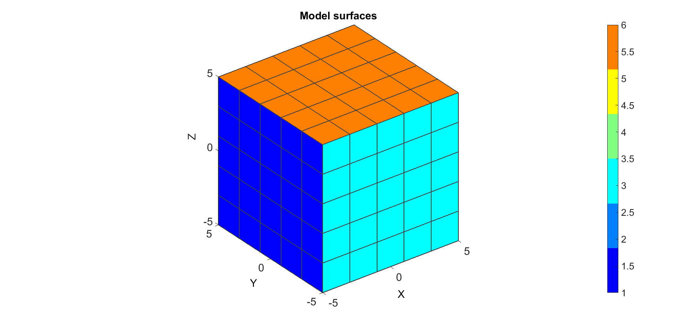
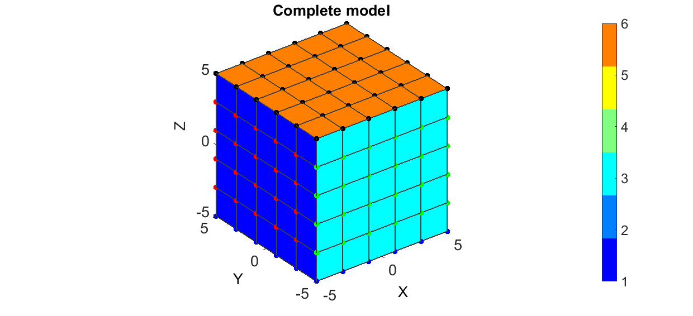
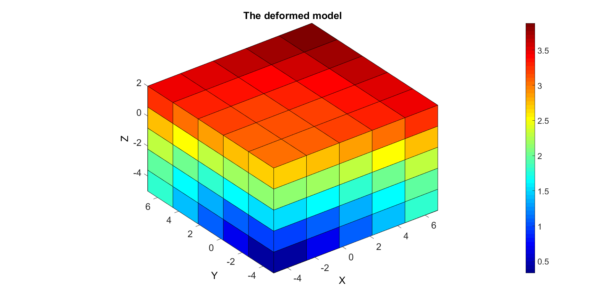
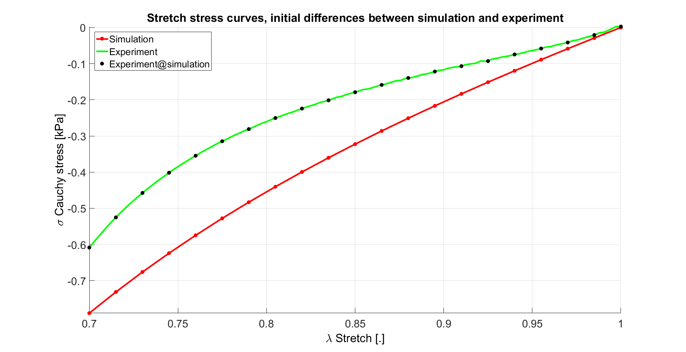
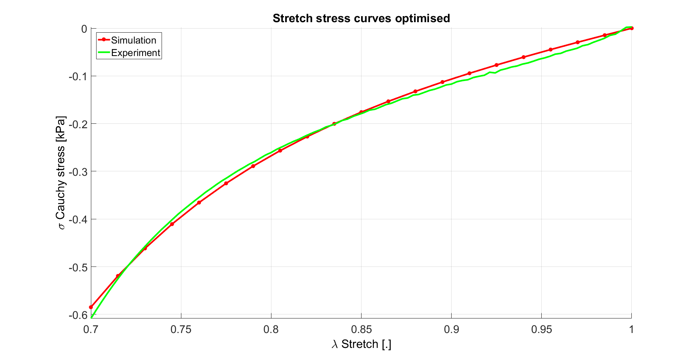

DEMO_FEBio_iFEA_uniaxial_01
Below is a demonstration for: 1) Inverse FEA based material parameter optimisation
Contents
clear; close all; clc;
Plot settings
figColor='w'; figColorDef='white'; fontSize=20; faceAlpha1=0.8; faceAlpha2=1; edgeColor=0.25*ones(1,3); edgeWidth=1.5; markerSize=25; lineWidth=3;
Control parameters
% path names filePath=mfilename('fullpath'); savePath=fullfile(fileparts(filePath),'data','temp'); modelName=fullfile(savePath,'iFEA_tempModel'); %Specifying dimensions and number of elements sampleWidth=10; sampleThickness=10; sampleHeight=10; pointSpacings=2*ones(1,3); initialArea=sampleWidth*sampleThickness; numElementsWidth=round(sampleWidth/pointSpacings(1)); numElementsThickness=round(sampleThickness/pointSpacings(2)); numElementsHeight=round(sampleHeight/pointSpacings(3)); stretchLoad=0.7; displacementMagnitude=[0 0 (stretchLoad*sampleHeight)-sampleHeight]; %True material parameter set k_factor=1e4; c1_true=1e-3; m1_true=12; k_true=c1_true*k_factor; %Initial material parameter set c1_ini=c1_true./2; m1_ini=m1_true+7; k_ini=c1_ini*k_factor; P=[c1_ini m1_ini];
SIMULATE EXPERIMENTAL DATA
%Basic set stress_cauchy_exp=[0;-0.0422226256000000;-0.0811346871800000;-0.119872916800000;-0.161466624000000;-0.209098742000000;-0.266409832800000;-0.337879334400000;-0.429344276800000;-0.548728823600000;-0.707119980000000]; stretch_exp=[1;0.970000000000000;0.940000000000000;0.910000000000000;0.880000000000000;0.850000000000000;0.820000000000000;0.790000000000000;0.760000000000000;0.730000000000000;0.700000000000000]; %Interpolate to higher sampling n=100; stretch_exp_n=linspace(1,stretchLoad,n); stress_cauchy_exp_n = interp1(stretch_exp,stress_cauchy_exp,stretch_exp_n,'pchip'); %Override variables stress_cauchy_exp=stress_cauchy_exp_n; stretch_exp=stretch_exp_n; %Add noise stdNoise=0.01; %Standard deviation in units of stress stress_cauchy_exp_n=stress_cauchy_exp_n+stdNoise.*randn(size(stress_cauchy_exp_n));
CREATING MESHED BOX
%Create box 1 boxDim=[sampleWidth sampleThickness sampleHeight]; %Dimensions boxEl=[numElementsWidth numElementsThickness numElementsHeight]; %Number of elements [box1]=hexMeshBox(boxDim,boxEl); E=box1.E; V=box1.V; Fb=box1.Fb; faceBoundaryMarker=box1.faceBoundaryMarker; X=V(:,1); Y=V(:,2); Z=V(:,3); VE=[mean(X(E),2) mean(Y(E),2) mean(Z(E),2)]; elementMaterialIndices=ones(size(E,1),1);
% Plotting boundary surfaces hf=figuremax(figColor,figColorDef); title('Model surfaces','FontSize',fontSize); xlabel('X','FontSize',fontSize); ylabel('Y','FontSize',fontSize); zlabel('Z','FontSize',fontSize); hold on; patch('Faces',Fb,'Vertices',V,'FaceColor','flat','CData',faceBoundaryMarker,'FaceAlpha',faceAlpha2,'lineWidth',edgeWidth,'edgeColor',edgeColor); colormap(jet(6)); colorbar; set(gca,'FontSize',fontSize); view(3); axis tight; axis equal; grid on; drawnow;
DEFINE BC's
%Define supported node sets logicFace=faceBoundaryMarker==1; Fr=Fb(logicFace,:); bcSupportList_X=unique(Fr(:)); logicFace=faceBoundaryMarker==3; Fr=Fb(logicFace,:); bcSupportList_Y=unique(Fr(:)); logicFace=faceBoundaryMarker==5; Fr=Fb(logicFace,:); bcSupportList_Z=unique(Fr(:)); %Prescribed displacement nodes logicPrescribe=faceBoundaryMarker==6; Fr=Fb(logicPrescribe,:); bcPrescribeList=unique(Fr(:)); bcPrescribeMagnitudes=displacementMagnitude(ones(1,numel(bcPrescribeList)),:);
Visualize BC's
hf=figuremax(figColor,figColorDef); title('Complete model','FontSize',fontSize); xlabel('X','FontSize',fontSize); ylabel('Y','FontSize',fontSize); zlabel('Z','FontSize',fontSize); hold on; patch('Faces',Fb,'Vertices',V,'FaceColor','flat','CData',faceBoundaryMarker,'FaceAlpha',faceAlpha2,'lineWidth',edgeWidth,'edgeColor',edgeColor); plotV(V(bcSupportList_X,:),'r.','MarkerSize',markerSize); plotV(V(bcSupportList_Y,:),'g.','MarkerSize',markerSize); plotV(V(bcSupportList_Z,:),'b.','MarkerSize',markerSize); plotV(V(bcPrescribeList,:),'k.','MarkerSize',markerSize); set(gca,'FontSize',fontSize); colormap(jet(6)); colorbar; set(gca,'FontSize',fontSize); view(3); axis tight; axis equal; grid on; drawnow;
CONSTRUCTING FEB MODEL
FEB_struct.febio_spec.version='2.0'; % Defining file names FEB_struct.run_filename=[modelName,'.feb']; %FEB file name FEB_struct.run_logname=[modelName,'.txt']; %FEBio log file name %Geometry section FEB_struct.Geometry.Nodes=V; FEB_struct.Geometry.Elements={E}; %The element sets FEB_struct.Geometry.ElementType={'hex8'}; %The element types FEB_struct.Geometry.ElementMat={elementMaterialIndices}; FEB_struct.Geometry.ElementsPartName={'Block'}; %Material section %Material 1 uncoupled hyperelastic FEB_struct.Materials{1}.Type='Ogden'; FEB_struct.Materials{1}.Name='Block_mat'; FEB_struct.Materials{1}.Properties={'c1','m1','k'}; FEB_struct.Materials{1}.Values={c1_ini,m1_ini,k_ini}; %Control section FEB_struct.Control.AnalysisType='static'; FEB_struct.Control.Properties={'time_steps','step_size',... 'max_refs','max_ups',... 'dtol','etol','rtol','lstol'}; FEB_struct.Control.Values={20,0.05,25,0,0.001,0.01,0,0.9}; FEB_struct.Control.TimeStepperProperties={'dtmin','dtmax','max_retries','opt_iter','aggressiveness'}; FEB_struct.Control.TimeStepperValues={1e-4,0.05,5,10,1}; %Defining node sets FEB_struct.Geometry.NodeSet{1}.Set=bcSupportList_X; FEB_struct.Geometry.NodeSet{1}.Name='bcSupportList_X'; FEB_struct.Geometry.NodeSet{2}.Set=bcSupportList_Y; FEB_struct.Geometry.NodeSet{2}.Name='bcSupportList_Y'; FEB_struct.Geometry.NodeSet{3}.Set=bcSupportList_Z; FEB_struct.Geometry.NodeSet{3}.Name='bcSupportList_Z'; % FEB_struct.Geometry.NodeSet{4}.Set=bcPrescribeList; % FEB_struct.Geometry.NodeSet{4}.Name='bcPrescribeList'; %Adding BC information FEB_struct.Boundary.Fix{1}.bc='x'; FEB_struct.Boundary.Fix{1}.SetName=FEB_struct.Geometry.NodeSet{1}.Name; FEB_struct.Boundary.Fix{2}.bc='y'; FEB_struct.Boundary.Fix{2}.SetName=FEB_struct.Geometry.NodeSet{2}.Name; FEB_struct.Boundary.Fix{3}.bc='z'; FEB_struct.Boundary.Fix{3}.SetName=FEB_struct.Geometry.NodeSet{3}.Name; %Prescribed BC's FEB_struct.Boundary.Prescribe{1}.Set=bcPrescribeList; FEB_struct.Boundary.Prescribe{1}.bc='z'; FEB_struct.Boundary.Prescribe{1}.lc=1; FEB_struct.Boundary.Prescribe{1}.nodeScale=displacementMagnitude(ones(numel(bcPrescribeList),1),3); FEB_struct.Boundary.Prescribe{1}.Type='relative'; %Load curves FEB_struct.LoadData.LoadCurves.id=1; FEB_struct.LoadData.LoadCurves.type={'linear'}; FEB_struct.LoadData.LoadCurves.loadPoints={[0 0;1 1;]}; %Adding output requests FEB_struct.Output.VarTypes={'displacement','stress','relative volume','shell thickness'}; %Specify log file output run_disp_output_name=[FEB_struct.run_filename(1:end-4),'_node_out.txt']; run_force_output_name=[FEB_struct.run_filename(1:end-4),'_force_out.txt']; FEB_struct.run_output_names={run_disp_output_name,run_force_output_name}; FEB_struct.output_types={'node_data','node_data'}; FEB_struct.data_types={'ux;uy;uz','Rx;Ry;Rz'};
SAVING .FEB FILE
FEB_struct.disp_opt=0; %Display waitbars option
febStruct2febFile(FEB_struct);
%%%%%%%%%%%%%%%%%%%%%%%%%%%%%%%%%%%%%%%%%%%%% --- Writing FEBio XML object --- 19-Feb-2015 21:22:45 Adding Module level Adding Control level Adding Globals level Adding Material level Adding Geometry level ----> Adding node field ----> Adding element field ----> Adding hex8 element entries.... ----> Adding NodeSet field Adding Boundary level ----> Defining fix type boundary conditions ----> Defining prescribe type boundary conditions Adding LoadData level ----> Defining load curves Adding Output level ----> Adding plotfile field ----> Adding logfile field Writing .feb file --- Done --- 19-Feb-2015 21:22:45
RUNNING FEBIO JOB
FEBioRunStruct.FEBioPath='C:\Program Files\febio-2.1.0\bin\FEBio2.exe'; FEBioRunStruct.run_filename=FEB_struct.run_filename; FEBioRunStruct.run_logname=FEB_struct.run_logname; FEBioRunStruct.disp_on=1; FEBioRunStruct.disp_log_on=1; FEBioRunStruct.runMode='external';%'internal'; FEBioRunStruct.t_check=0.25; %Time for checking log file (dont set too small) FEBioRunStruct.maxtpi=1e99; %Max analysis time FEBioRunStruct.maxLogCheckTime=3; %Max log file checking time [runFlag]=runMonitorFEBio(FEBioRunStruct);%START FEBio NOW!!!!!!!!
%%%%%%%%%%%%%%%%%%%%%%%%%%%%%%%%%%%%%%%%%%%%% --- STARTING FEBIO JOB --- 19-Feb-2015 21:22:45 Waiting for log file... Proceeding to check log file...19-Feb-2015 21:22:45 ------- converged at time : 0.05 ------- converged at time : 0.1 ------- converged at time : 0.1125 ------- converged at time : 0.125 ------- converged at time : 0.145 ------- converged at time : 0.171 ------- converged at time : 0.1864 ------- converged at time : 0.191271 ------- converged at time : 0.205168 ------- converged at time : 0.226285 ------- converged at time : 0.233009 ------- converged at time : 0.248388 ------- converged at time : 0.270691 ------- converged at time : 0.298533 ------- converged at time : 0.330807 ------- converged at time : 0.366626 ------- converged at time : 0.405281 ------- converged at time : 0.446206 ------- converged at time : 0.467575 ------- converged at time : 0.485042 ------- converged at time : 0.491035 ------- converged at time : 0.50562 ------- converged at time : 0.511037 ------- converged at time : 0.52537 ------- converged at time : 0.546837 ------- converged at time : 0.574011 ------- converged at time : 0.60575 ------- converged at time : 0.641141 ------- converged at time : 0.660297 ------- converged at time : 0.685622 ------- converged at time : 0.715882 ------- converged at time : 0.75009 ------- converged at time : 0.787457 ------- converged at time : 0.82735 ------- converged at time : 0.837829 ------- converged at time : 0.848307 ------- converged at time : 0.86669 ------- converged at time : 0.891396 ------- converged at time : 0.921162 ------- converged at time : 0.954974 ------- converged at time : 0.992023 ------- converged at time : 1 --- Done --- 19-Feb-2015 21:22:49
IMPORTING NODAL DISPLACEMENT RESULTS
Importing nodal displacements from a log file
[~, N_disp_mat,~]=importFEBio_logfile(FEB_struct.run_output_names{1}); %Nodal displacements
DN=N_disp_mat(:,2:end,end); %Final nodal displacements
CREATING NODE SET IN DEFORMED STATE
V_def=V+DN; DN_magnitude=sqrt(sum(DN.^2,2));
Plotting the deformed model
[CF]=vertexToFaceMeasure(Fb,DN_magnitude); hf1=figuremax(figColor,figColorDef); title('The deformed model','FontSize',fontSize); xlabel('X','FontSize',fontSize); ylabel('Y','FontSize',fontSize); zlabel('Z','FontSize',fontSize); hold on; hps=patch('Faces',Fb,'Vertices',V_def,'FaceColor','flat','CData',CF); view(3); axis tight; axis equal; grid on; colormap jet; colorbar; % camlight headlight; set(gca,'FontSize',fontSize); drawnow;
IMPORTING NODAL FORCES
Importing nodal forces from a log file
[time_mat, N_force_mat,~]=importFEBio_logfile(FEB_struct.run_output_names{2}); %Nodal displacements
FZ_set=N_force_mat(bcPrescribeList,end,:); %Final nodal displacements
%Get Z forces FZ=sum(N_force_mat(bcPrescribeList,end,:),1); FZ=[0; FZ(:)]; %Mean top surface nodal forces %Derive applied stretch DZ_set=N_disp_mat(bcPrescribeList,end,:); %Final nodal displacements DZ_set=mean(DZ_set,1); stretch_sim=(DZ_set+sampleHeight)./sampleHeight; stretch_sim=[1; stretch_sim(:)]; %Derive simulated Cauchy stress (alternatively import stress and take the mean) currentArea=initialArea./stretch_sim; stress_cauchy_sim=FZ./currentArea; %Cauchy stress stress_cauchy_sim=stress_cauchy_sim.*1e3; %Scale to kPa %Interpolate experiment onto simulated points stress_cauchy_exp_sim = interp1(stretch_exp,stress_cauchy_exp,stretch_sim,'pchip');
hf1=figuremax(figColor,figColorDef); title('Stretch stress curves, initial differences between simulation and experiment','FontSize',fontSize); xlabel('\lambda Stretch [.]','FontSize',fontSize); ylabel('\sigma Cauchy stress [kPa]','FontSize',fontSize); zlabel('Z','FontSize',fontSize); hold on; H(1)=plot(stretch_sim,stress_cauchy_sim,'r.-','lineWidth',lineWidth,'markerSize',markerSize); H(2)=plot(stretch_exp,stress_cauchy_exp,'g-','lineWidth',lineWidth); H(3)=plot(stretch_sim,stress_cauchy_exp_sim,'k.','markerSize',markerSize); legend(H,{'Simulation','Experiment','Experiment@simulation'},'Location','northwest'); view(2); axis tight; grid on; set(gca,'FontSize',fontSize); drawnow;
CREATE STRUCTURES FOR OPTIMISATION
mat_struct.id=1;
mat_struct.par_names={'c1','m1','k'};
mat_struct.par_values={c1_ini m1_ini k_ini};
% docNode=set_mat_par_FEBIO(FEB_struct.run_filename,FEB_struct.run_filename,{mat_struct});
FEBioRunStruct.disp_on=0;
FEBioRunStruct.disp_log_on=0;
%What should be known to the objective function:
objectiveStruct.bcPrescribeList=bcPrescribeList;
objectiveStruct.stretch_exp=stretch_exp;
objectiveStruct.stress_cauchy_exp=stress_cauchy_exp;
objectiveStruct.FEBioRunStruct=FEBioRunStruct;
objectiveStruct.FEB_struct=FEB_struct;
objectiveStruct.mat_struct=mat_struct;
objectiveStruct.k_factor=k_factor;
objectiveStruct.initialArea=initialArea;
objectiveStruct.sampleHeight=sampleHeight;
objectiveStruct.parNormFactors=P; %This will normalize the paramters to ones(size(P))
objectiveStruct.Pb_struct.xx_c=P; %Parameter constraining centre
objectiveStruct.Pb_struct.xxlim=[[P(1)/100 2]' [P(1)*100 50]']; %Parameter bounds
%Optimisation settings
maxNumberIterations=30; %Maximum number of optimization iterations
maxNumberFunctionEvaluations=maxNumberIterations*10; %Maximum number of function evaluations, N.B. multiple evaluations are used per iteration
functionTolerance=1e-2; %Tolerance on objective function value
parameterTolerance=1e-2; %Tolerance on parameter variation
displayTypeIterations='iter';
objectiveStruct.method=1;
%File names of output files
objectiveStruct.run_output_names=FEB_struct.run_output_names;
STARTING OPTIMISATION
Pn=P./objectiveStruct.parNormFactors; switch objectiveStruct.method case 1 %fminsearch and Nelder-Mead OPT_options=optimset('fminsearch'); % 'Nelder-Mead simplex direct search' OPT_options = optimset(OPT_options,'MaxFunEvals',maxNumberFunctionEvaluations,... 'MaxIter',maxNumberIterations,... 'TolFun',functionTolerance,... 'TolX',parameterTolerance,... 'Display',displayTypeIterations,... 'FinDiffRelStep',1e-3,... 'DiffMaxChange',0.5); [Pn_opt,OPT_out.fval,OPT_out.exitflag,OPT_out.output]= fminsearch(@(Pn) obj_DEMO_FEBio_iFEA_uniaxial_01(Pn,objectiveStruct),Pn,OPT_options); case 2 %lsqnonlin and Levenberg-Marquardt OPT_options = optimoptions(@lsqnonlin,'Algorithm','levenberg-marquardt'); OPT_options = optimoptions(OPT_options,'MaxFunEvals',maxNumberFunctionEvaluations,... 'MaxIter',maxNumberIterations,... 'TolFun',functionTolerance,... 'TolX',parameterTolerance,... 'Display',displayTypeIterations,... 'FinDiffRelStep',1e-3,... 'DiffMaxChange',0.5); [Pn_opt,OPT_out.resnorm,OPT_out.residual]= lsqnonlin(@(Pn) obj_DEMO_FEBio_iFEA_uniaxial_01(Pn,objectiveStruct),Pn,[],[],OPT_options); end
SETTING MATERIAL PARAMETERS...
Normalized: 1.0000000000000000e+00 1.0000000000000000e+00
Proposed: 5.0000000000000001e-04 1.9000000000000000e+01
Set: 5.0000000000000001e-04 1.9000000000000000e+01
Done
Iteration Func-count min f(x) Procedure
0 1 0.42973
SETTING MATERIAL PARAMETERS...
Normalized: 1.0500000000000000e+00 1.0000000000000000e+00
Proposed: 5.2500000000000008e-04 1.9000000000000000e+01
Set: 5.4641173334845901e-04 1.9000000000000000e+01
Done
SETTING MATERIAL PARAMETERS...
Normalized: 1.0000000000000000e+00 1.0500000000000000e+00
Proposed: 5.0000000000000001e-04 1.9949999999999999e+01
Set: 5.0000000000000001e-04 2.0827345171364222e+01
Done
1 3 0.42973 initial simplex
SETTING MATERIAL PARAMETERS...
Normalized: 1.0499999999999998e+00 9.4999999999999996e-01
Proposed: 5.2499999999999997e-04 1.8050000000000001e+01
Set: 5.4641173334845879e-04 1.7127325346370945e+01
Done
SETTING MATERIAL PARAMETERS...
Normalized: 1.0125000000000000e+00 1.0249999999999999e+00
Proposed: 5.0624999999999997e-04 1.9474999999999998e+01
Set: 5.1159723081732980e-04 1.9898131367395770e+01
Done
SETTING MATERIAL PARAMETERS...
Normalized: 1.0249999999999999e+00 1.0000000000000000e+00
Proposed: 5.1249999999999993e-04 1.9000000000000000e+01
Set: 5.2319826571836051e-04 1.9000000000000000e+01
Done
SETTING MATERIAL PARAMETERS...
Normalized: 1.0000000000000000e+00 1.0249999999999999e+00
Proposed: 5.0000000000000001e-04 1.9474999999999998e+01
Set: 5.0000000000000001e-04 1.9898131367395770e+01
Done
2 7 0.373241 shrink
SETTING MATERIAL PARAMETERS...
Normalized: 1.0249999999999999e+00 9.7500000000000009e-01
Proposed: 5.1249999999999993e-04 1.8525000000000002e+01
Set: 5.2319826571836051e-04 1.8088972230264957e+01
Done
SETTING MATERIAL PARAMETERS...
Normalized: 1.0062500000000001e+00 1.0125000000000000e+00
Proposed: 5.0312500000000010e-04 1.9237500000000001e+01
Set: 5.0579813967284210e-04 1.9444928144091474e+01
Done
SETTING MATERIAL PARAMETERS...
Normalized: 1.0125000000000000e+00 1.0000000000000000e+00
Proposed: 5.0624999999999997e-04 1.9000000000000000e+01
Set: 5.1159723081732980e-04 1.9000000000000000e+01
Done
SETTING MATERIAL PARAMETERS...
Normalized: 1.0125000000000000e+00 1.0125000000000000e+00
Proposed: 5.0624999999999997e-04 1.9237500000000001e+01
Set: 5.1159723081732980e-04 1.9444928144091474e+01
Done
3 11 0.373241 shrink
SETTING MATERIAL PARAMETERS...
Normalized: 1.0249999999999997e+00 9.8750000000000004e-01
Proposed: 5.1249999999999983e-04 1.8762499999999999e+01
Set: 5.2319826571836029e-04 1.8551652251352074e+01
Done
SETTING MATERIAL PARAMETERS...
Normalized: 1.0156250000000000e+00 1.0062500000000001e+00
Proposed: 5.0781250000000002e-04 1.9118750000000002e+01
Set: 5.1449713305059088e-04 1.9221398157764785e+01
Done
SETTING MATERIAL PARAMETERS...
Normalized: 1.0187499999999998e+00 1.0000000000000000e+00
Proposed: 5.0937499999999995e-04 1.9000000000000000e+01
Set: 5.1739727298274292e-04 1.9000000000000000e+01
Done
SETTING MATERIAL PARAMETERS...
Normalized: 1.0187499999999998e+00 1.0062500000000001e+00
Proposed: 5.0937499999999995e-04 1.9118750000000002e+01
Set: 5.1739727298274292e-04 1.9221398157764785e+01
Done
4 15 0.373241 shrink
SETTING MATERIAL PARAMETERS...
Normalized: 1.0249999999999999e+00 9.9374999999999991e-01
Proposed: 5.1249999999999993e-04 1.8881249999999998e+01
Set: 5.2319826571836051e-04 1.8777722503099653e+01
Done
5 16 0.373241 reflect
SETTING MATERIAL PARAMETERS...
Normalized: 1.0312500000000000e+00 9.9374999999999991e-01
Proposed: 5.1562500000000002e-04 1.8881249999999998e+01
Set: 5.2900020857346184e-04 1.8777722503099653e+01
Done
SETTING MATERIAL PARAMETERS...
Normalized: 1.0375000000000001e+00 9.9062499999999964e-01
Proposed: 5.1875000000000001e-04 1.8821874999999991e+01
Set: 5.3480310109732586e-04 1.8665148366160665e+01
Done
6 18 0.355919 expand
SETTING MATERIAL PARAMETERS...
Normalized: 1.0375000000000001e+00 9.9687499999999973e-01
Proposed: 5.1875000000000001e-04 1.8940624999999994e+01
Set: 5.3480310109732586e-04 1.8889348451326811e+01
Done
SETTING MATERIAL PARAMETERS...
Normalized: 1.0437500000000002e+00 9.9843749999999964e-01
Proposed: 5.2187500000000009e-04 1.8970312499999991e+01
Set: 5.4060694283923193e-04 1.8944797663785280e+01
Done
7 20 0.354872 reflect
SETTING MATERIAL PARAMETERS...
Normalized: 1.0500000000000003e+00 9.8749999999999938e-01
Proposed: 5.2500000000000018e-04 1.8762499999999989e+01
Set: 5.4641173334845923e-04 1.8551652251352056e+01
Done
SETTING MATERIAL PARAMETERS...
Normalized: 1.0625000000000004e+00 9.8124999999999929e-01
Proposed: 5.3125000000000026e-04 1.8643749999999986e+01
Set: 5.5802415886599377e-04 1.8321998931494676e+01
Done
8 22 0.318226 expand
SETTING MATERIAL PARAMETERS...
Normalized: 1.0625000000000004e+00 9.8749999999999938e-01
Proposed: 5.3125000000000026e-04 1.8762499999999989e+01
Set: 5.5802415886599377e-04 1.8551652251352056e+01
Done
9 23 0.318226 reflect
SETTING MATERIAL PARAMETERS...
Normalized: 1.0875000000000008e+00 9.7187499999999893e-01
Proposed: 5.4375000000000040e-04 1.8465624999999982e+01
Set: 5.8126037527720059e-04 1.7971259388740858e+01
Done
SETTING MATERIAL PARAMETERS...
Normalized: 1.1125000000000012e+00 9.5937499999999876e-01
Proposed: 5.5625000000000054e-04 1.8228124999999977e+01
Set: 6.0451172148481423e-04 1.7493023002900838e+01
Done
10 25 0.253642 expand
SETTING MATERIAL PARAMETERS...
Normalized: 1.1125000000000012e+00 9.5312499999999867e-01
Proposed: 5.5625000000000054e-04 1.8109374999999975e+01
Set: 6.0451172148481423e-04 1.7249840749925077e+01
Done
11 26 0.253642 reflect
SETTING MATERIAL PARAMETERS...
Normalized: 1.1625000000000019e+00 9.3124999999999813e-01
Proposed: 5.8125000000000093e-04 1.7693749999999966e+01
Set: 6.5105968790473280e-04 1.6380944329174653e+01
Done
SETTING MATERIAL PARAMETERS...
Normalized: 1.2125000000000026e+00 9.0624999999999734e-01
Proposed: 6.0625000000000132e-04 1.7218749999999950e+01
Set: 6.9766782735669066e-04 1.5363005753066897e+01
Done
12 28 0.193266 expand
SETTING MATERIAL PARAMETERS...
Normalized: 1.2125000000000026e+00 9.1249999999999742e-01
Proposed: 6.0625000000000132e-04 1.7337499999999952e+01
Set: 6.9766782735669066e-04 1.5619300324722191e+01
Done
SETTING MATERIAL PARAMETERS...
Normalized: 1.2625000000000033e+00 8.9218749999999680e-01
Proposed: 6.3125000000000171e-04 1.6951562499999937e+01
Set: 7.4433590907162900e-04 1.4783528491443626e+01
Done
13 30 0.168986 reflect
SETTING MATERIAL PARAMETERS...
Normalized: 1.3125000000000040e+00 8.5937499999999600e-01
Proposed: 6.5625000000000199e-04 1.6328124999999925e+01
Set: 7.9106370228048913e-04 1.3427956601779503e+01
Done
14 31 0.168986 reflect
SETTING MATERIAL PARAMETERS...
Normalized: 1.3125000000000040e+00 8.6562499999999609e-01
Proposed: 6.5625000000000199e-04 1.6446874999999928e+01
Set: 7.9106370228048913e-04 1.3685568613133793e+01
Done
SETTING MATERIAL PARAMETERS...
Normalized: 1.3625000000000047e+00 8.4531249999999547e-01
Proposed: 6.8125000000000238e-04 1.6060937499999913e+01
Set: 8.3785097621421278e-04 1.2851265104336505e+01
Done
15 33 0.136681 expand
SETTING MATERIAL PARAMETERS...
Normalized: 1.2625000000000033e+00 8.9843749999999689e-01
Proposed: 6.3125000000000171e-04 1.7070312499999940e+01
Set: 7.4433590907162900e-04 1.5041456757301574e+01
Done
SETTING MATERIAL PARAMETERS...
Normalized: 1.3000000000000038e+00 8.6914062499999623e-01
Proposed: 6.5000000000000192e-04 1.6513671874999929e+01
Set: 7.7937616864590185e-04 1.3830711093313253e+01
Done
16 35 0.136681 contract inside
SETTING MATERIAL PARAMETERS...
Normalized: 1.4500000000000060e+00 8.0195312499999427e-01
Proposed: 7.2500000000000299e-04 1.5237109374999891e+01
Set: 9.1987113698237233e-04 1.1121412845236614e+01
Done
SETTING MATERIAL PARAMETERS...
Normalized: 1.3906250000000051e+00 8.2958984374999512e-01
Proposed: 6.9531250000000257e-04 1.5762207031249908e+01
Set: 8.6419487016944365e-04 1.2213720280408261e+01
Done
17 37 0.136681 contract outside
SETTING MATERIAL PARAMETERS...
Normalized: 1.4531250000000058e+00 8.0576171874999436e-01
Proposed: 7.2656250000000292e-04 1.5309472656249893e+01
Set: 9.2280376887120773e-04 1.1269282332333830e+01
Done
18 38 0.136681 reflect
SETTING MATERIAL PARAMETERS...
Normalized: 1.4250000000000054e+00 8.2148437499999472e-01
Proposed: 7.1250000000000274e-04 1.5608203124999900e+01
Set: 8.9641836183846854e-04 1.1889076781475257e+01
Done
SETTING MATERIAL PARAMETERS...
Normalized: 1.4421875000000051e+00 8.1743164062499440e-01
Proposed: 7.2109375000000255e-04 1.5531201171874894e+01
Set: 9.1254056305435118e-04 1.1727979494325728e+01
Done
19 40 0.106894 expand
SETTING MATERIAL PARAMETERS...
Normalized: 1.3515625000000040e+00 8.5698242187499551e-01
Proposed: 6.7578125000000201e-04 1.6282666015624915e+01
Set: 8.2761118916791746e-04 1.3329517466223916e+01
Done
SETTING MATERIAL PARAMETERS...
Normalized: 1.3007812500000027e+00 8.8259277343749609e-01
Proposed: 6.5039062500000134e-04 1.6769262695312428e+01
Set: 7.8010653051737799e-04 1.4386891234409349e+01
Done
20 42 0.100583 expand
SETTING MATERIAL PARAMETERS...
Normalized: 1.3804687500000030e+00 8.5471191406249503e-01
Proposed: 6.9023437500000150e-04 1.6239526367187405e+01
Set: 8.5467963737501963e-04 1.3236208395483628e+01
Done
SETTING MATERIAL PARAMETERS...
Normalized: 1.3669921875000042e+00 8.4766235351562036e-01
Proposed: 6.8349609375000214e-04 1.6105584716796788e+01
Set: 8.4205742453327909e-04 1.2947277034610011e+01
Done
21 44 0.100583 contract inside
SETTING MATERIAL PARAMETERS...
Normalized: 1.3759765625000036e+00 8.5236206054687014e-01
Proposed: 6.8798828125000175e-04 1.6194879150390534e+01
Set: 8.5047175528103855e-04 1.3139759824496057e+01
Done
SETTING MATERIAL PARAMETERS...
Normalized: 1.3804687500000030e+00 8.5471191406249525e-01
Proposed: 6.9023437500000150e-04 1.6239526367187409e+01
Set: 8.5467963737501963e-04 1.3236208395483636e+01
Done
22 46 0.0631062 expand
SETTING MATERIAL PARAMETERS...
Normalized: 1.2390625000000006e+00 9.1987304687499694e-01
Proposed: 6.1953125000000029e-04 1.7477587890624942e+01
Set: 7.2245279691959265e-04 1.5920260086773188e+01
Done
SETTING MATERIAL PARAMETERS...
Normalized: 1.3914062500000040e+00 8.4304199218749498e-01
Proposed: 6.9570312500000198e-04 1.6017797851562406e+01
Set: 8.6492691221368720e-04 1.2758654446641380e+01
Done
23 48 0.0631062 contract inside
SETTING MATERIAL PARAMETERS...
Normalized: 1.4710937500000041e+00 8.1516113281249414e-01
Proposed: 7.3554687500000204e-04 1.5488061523437388e+01
Set: 9.3967086027596492e-04 1.1638112619945481e+01
Done
24 49 0.0631062 reflect
SETTING MATERIAL PARAMETERS...
Normalized: 1.4601562500000032e+00 8.2683105468749440e-01
Proposed: 7.3007812500000156e-04 1.5709790039062394e+01
Set: 9.2940303078273561e-04 1.2102877448464934e+01
Done
SETTING MATERIAL PARAMETERS...
Normalized: 1.4085937500000036e+00 8.3898925781249489e-01
Proposed: 7.0429687500000180e-04 1.5940795898437402e+01
Set: 8.8103548711368647e-04 1.2593770384067415e+01
Done
SETTING MATERIAL PARAMETERS...
Normalized: 1.4257812500000036e+00 8.3493652343749469e-01
Proposed: 7.1289062500000183e-04 1.5863793945312398e+01
Set: 8.9715103809091758e-04 1.2429474749553552e+01
Done
SETTING MATERIAL PARAMETERS...
Normalized: 1.3859375000000034e+00 8.4887695312499512e-01
Proposed: 6.9296875000000174e-04 1.6128662109374908e+01
Set: 8.5980292104101386e-04 1.2996966110917976e+01
Done
25 53 0.0626733 shrink
SETTING MATERIAL PARAMETERS...
Normalized: 1.4203125000000032e+00 8.4077148437499494e-01
Proposed: 7.1015625000000158e-04 1.5974658203124903e+01
Set: 8.9202260664739109e-04 1.2666210534585485e+01
Done
SETTING MATERIAL PARAMETERS...
Normalized: 1.4375000000000036e+00 8.3671874999999485e-01
Proposed: 7.1875000000000183e-04 1.5897656249999901e+01
Set: 9.0814290866659923e-04 1.2501649090883529e+01
Done
26 55 0.0409101 expand
SETTING MATERIAL PARAMETERS...
Normalized: 1.4828125000000041e+00 8.1694335937499418e-01
Proposed: 7.4140625000000205e-04 1.5521923828124889e+01
Set: 9.5067522569101796e-04 1.1708629296491665e+01
Done
27 56 0.0409101 reflect
SETTING MATERIAL PARAMETERS...
Normalized: 1.4945312500000041e+00 8.1872558593749434e-01
Proposed: 7.4726562500000205e-04 1.5555786132812392e+01
Set: 9.6168281530046684e-04 1.1779319910893133e+01
Done
SETTING MATERIAL PARAMETERS...
Normalized: 1.5289062500000039e+00 8.1062011718749427e-01
Proposed: 7.6445312500000200e-04 1.5401782226562391e+01
Set: 9.9399031665543293e-04 1.1459259504355757e+01
Done
28 58 0.0168442 expand
SETTING MATERIAL PARAMETERS...
Normalized: 1.4835937500000034e+00 8.3039550781249494e-01
Proposed: 7.4179687500000168e-04 1.5777514648437403e+01
Set: 9.5140896472290881e-04 1.2246154147150209e+01
Done
SETTING MATERIAL PARAMETERS...
Normalized: 1.4839843750000030e+00 8.3712158203124520e-01
Proposed: 7.4199218750000155e-04 1.5905310058593660e+01
Set: 9.5177583961223659e-04 1.2517979268635656e+01
Done
29 60 0.00460596 expand
SETTING MATERIAL PARAMETERS...
Normalized: 1.5753906250000034e+00 8.1102294921874463e-01
Proposed: 7.8769531250000172e-04 1.5409436035156148e+01
Set: 1.0377228187944038e-03 1.1475076516864252e+01
Done
SETTING MATERIAL PARAMETERS...
Normalized: 1.6443359375000028e+00 7.9817504882811940e-01
Proposed: 8.2216796875000139e-04 1.5165325927734269e+01
Set: 1.1026792592496086e-03 1.0975697401558371e+01
Done
30 62 0.0023778 reflect
Exiting: Maximum number of iterations has been exceeded
- increase MaxIter option.
Current function value: 0.002378
[Fopt,OPT_stats_out]=obj_DEMO_FEBio_iFEA_uniaxial_01(Pn_opt,objectiveStruct);
% type(fullfile(fileparts(filePath),'obj_DEMO_FEBio_iFEA_uniaxial_01'))
SETTING MATERIAL PARAMETERS... Normalized: 1.5753906250000034e+00 8.1102294921874463e-01 Proposed: 7.8769531250000172e-04 1.5409436035156148e+01 Set: 1.0377228187944038e-03 1.1475076516864252e+01 Done
Unnormalize and constrain parameters
P_opt=Pn_opt.*objectiveStruct.parNormFactors; %Scale back, undo normalization %Constraining parameters for q=1:1:numel(P_opt); [P_opt(q)]=parLimNat(objectiveStruct.Pb_struct.xx_c(q),objectiveStruct.Pb_struct.xxlim(q,:),P_opt(q)); end disp_text=sprintf('%6.16e,',P_opt); disp_text=disp_text(1:end-1); disp(['P_opt=',disp_text]);
P_opt=1.0377228187944038e-03,1.1475076516864252e+01
hf1=figuremax(figColor,figColorDef); title('Stretch stress curves optimised','FontSize',fontSize); xlabel('\lambda Stretch [.]','FontSize',fontSize); ylabel('\sigma Cauchy stress [kPa]','FontSize',fontSize); zlabel('Z','FontSize',fontSize); hold on; Hn(1)=plot(OPT_stats_out.stretch_sim,OPT_stats_out.stress_cauchy_sim,'r.-','lineWidth',lineWidth,'markerSize',markerSize); Hn(2)=plot(stretch_exp,stress_cauchy_exp,'g-','lineWidth',lineWidth); legend(Hn,{'Simulation','Experiment'},'Location','northwest'); view(2); axis tight; grid on; set(gca,'FontSize',fontSize); drawnow;

GIBBON www.gibboncode.org
Kevin Mattheus Moerman, gibbon.toolbox@gmail.com